To Evaporate,
To Endure
년도
작업 도구
크기
지도 교수
Year
Medium
Measurement
Instructor
2025
Indesign, Photoshop
4.5 in x 8 in, 33 pages
Amy Auman
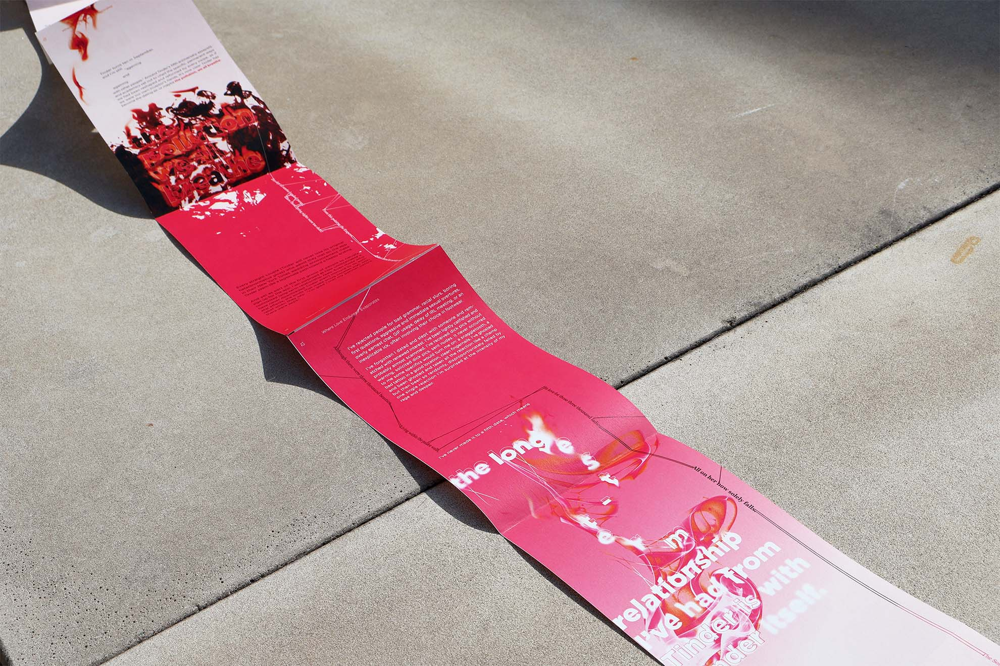
Context
이 책은 백거이의 시 「장한가」 (806AD) 와 앨리슨 P. 데이비스의 에세이「Tinder Hearted」 (2022), 천 년이 넘는 세월을 사이에 둔 두 글을 한 공간에 담아냈습니다. 서로 다른 시대와 문화 속에서 쓰인 이 글들은 영원히 지속되는 사랑과 빠르게 증발하는 사랑을 대조시킵니다.
This book is built upon two texts separated by more than a millennium: Bai Juyi's poem The “Song of Everlasting Sorrow” (806 AD) and Allison P. Davis's article “Tinder Hearted” (2022). Presented together, these works form a sharp contrast between the enduring devotion from the Tang dynasty and the swipe-based intimacies of contemporary romance.
Strategy
최종 디자인은 끝없이 이어지는 끈의 형상으로 표현된 백거이의 시와, 불타며 증발하는 듯한 데이비스의 에세이를 대비시킵니다. 전자는 중국 고대의 두루마리를 떠올리게 하는 가로 방향으로, 후자는 모바일 스크린의 비율을 반영한 세로 방향으로 읽을 수 있습니다.
The book can be read in two directions: Bai Juyi's text unfolds horizontally, inspired by the long handscrolls of early China, while Davis's article runs vertically, echoing the upright orientation of mobile screens. tension.
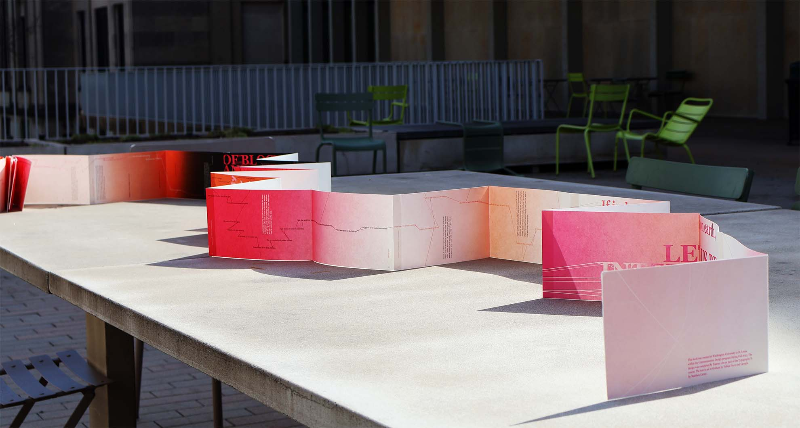
최종 책 디자인
final book design
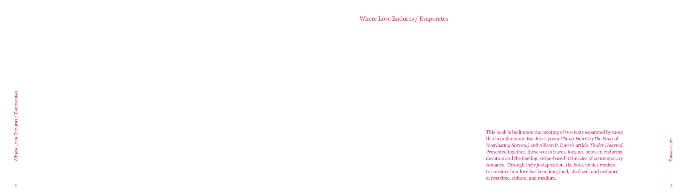
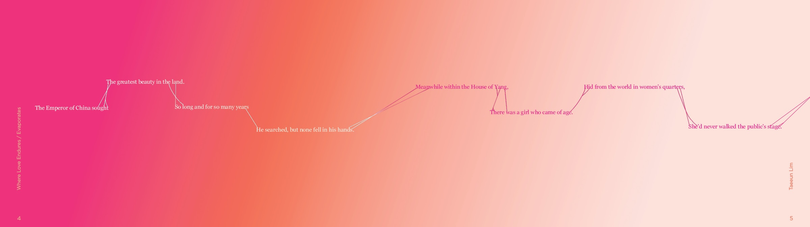
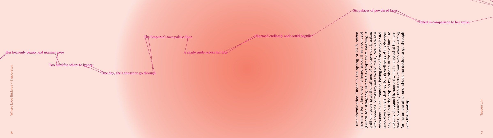
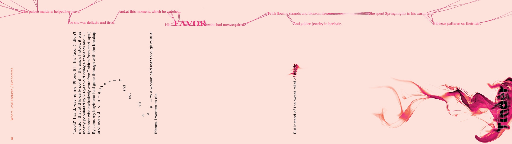
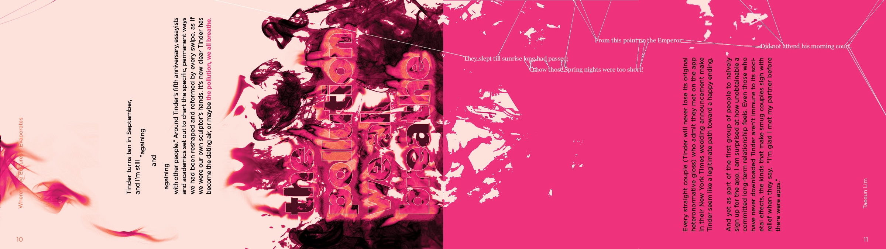
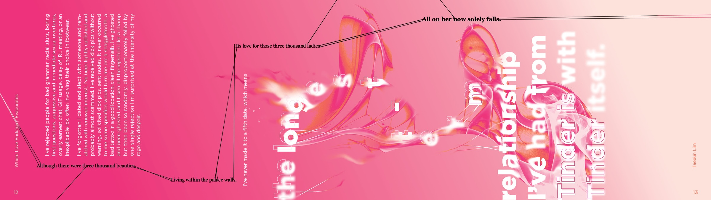
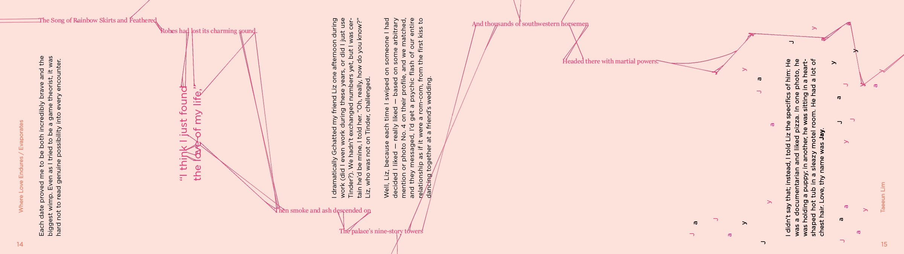
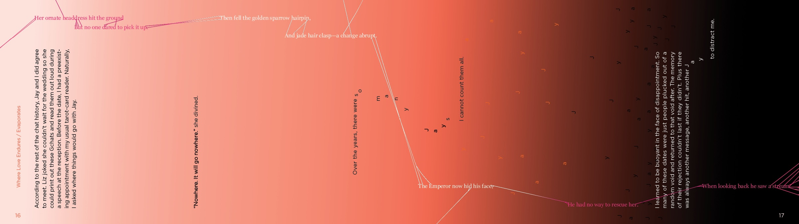
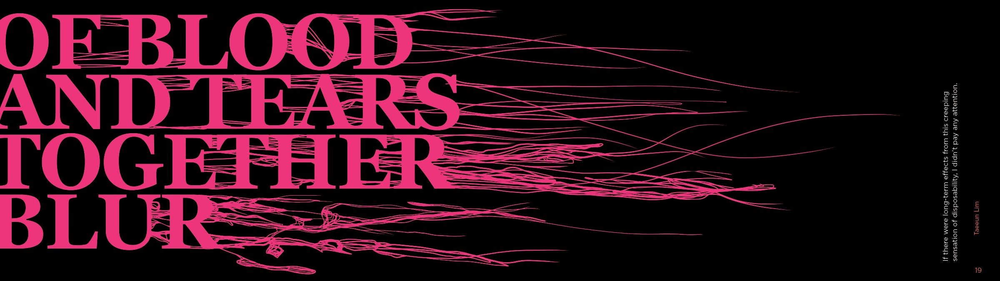
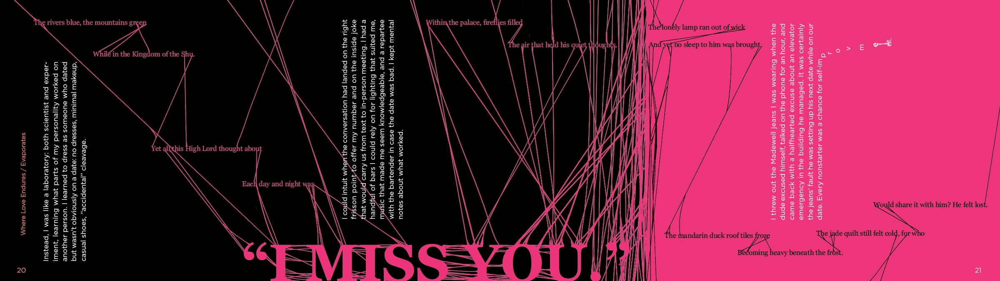
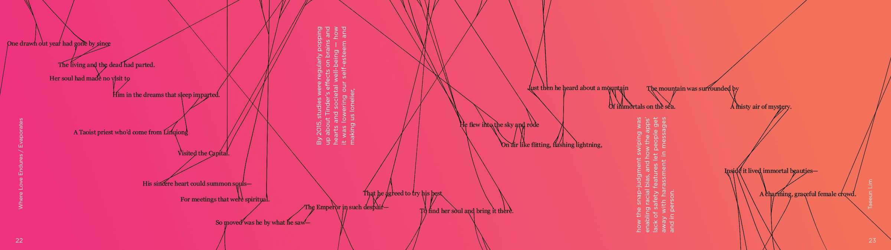
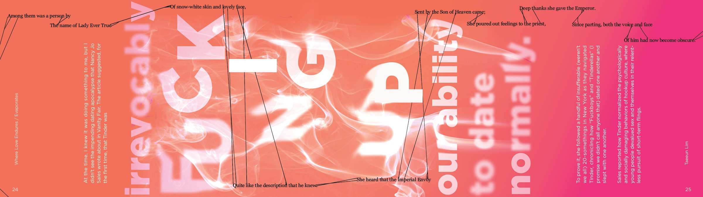
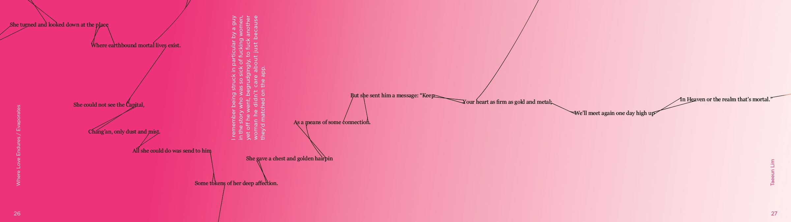
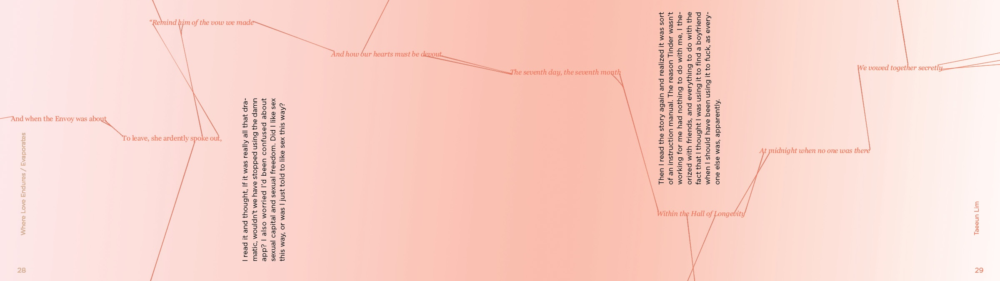
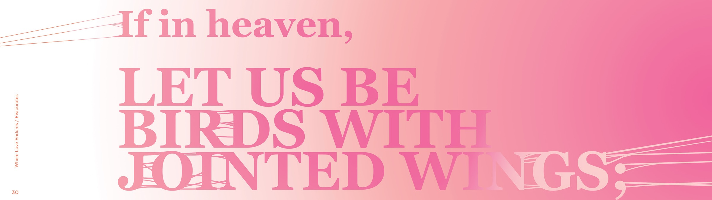
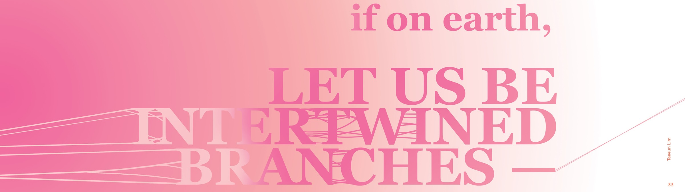
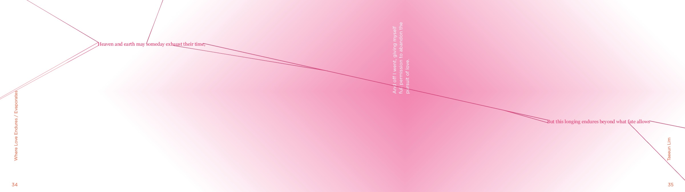
책 디지털 버전
digital form of the book
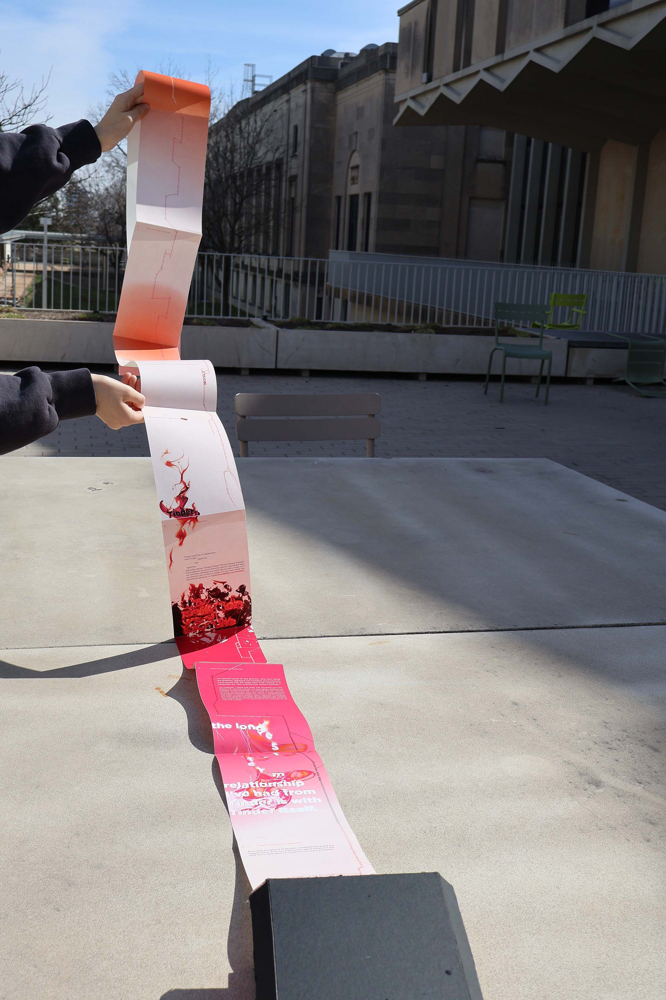
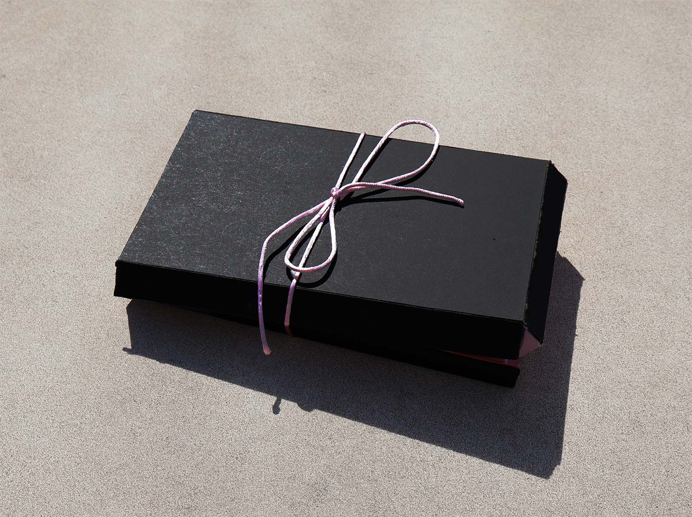
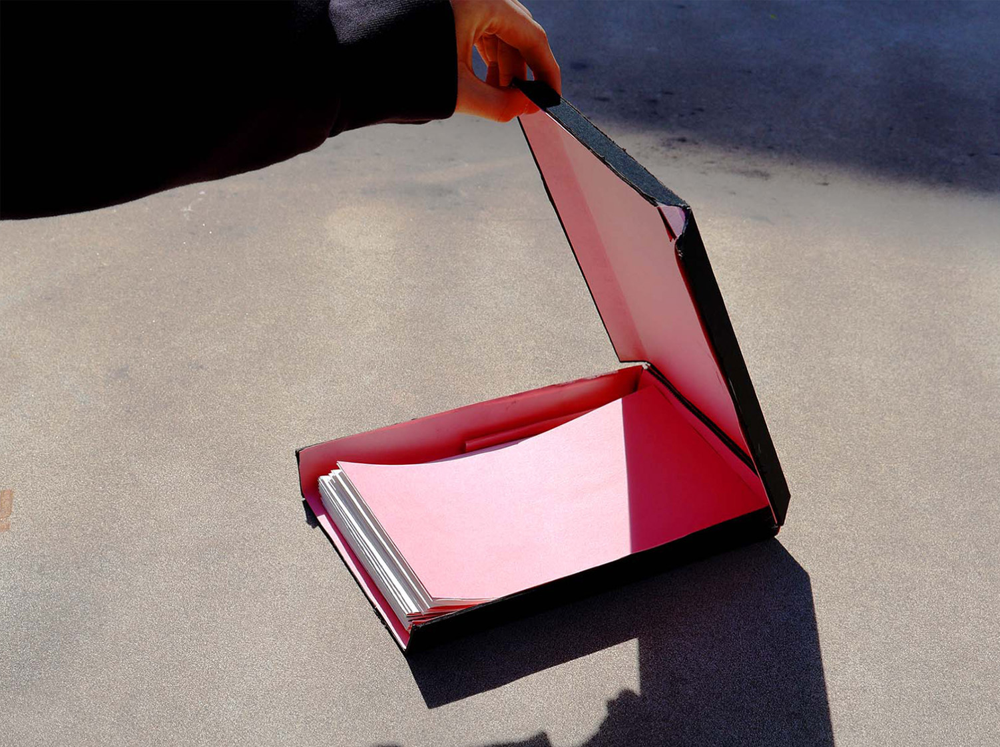
최종 책 디테일 이미지
detail shots of final book design
Process
두 작품이 여러 방면에서 뚜렷한 차이를 지니고 있는 만큼, 초반에는 다양한 차이에 초점을 맞추며 사고를 확장해 나갔습니다. 투명 위젯과 한자/잉크의 조합은 현대와 과거를 대조시키며 시각적으로 흥미로운 결과를 만들어냈지만, 작품의 핵심인 “사랑”과 관련이 적어 과감히 삭제했습니다. 아이디어가 늘어날수록 간결하고 통일성 있는 시스템의 필요성을 절실히 느끼게 되었습니다.
I initially explored multiple directions to determine how to two texts should be contrasted. The juxtaposition of glass widgets with ink created visually compelling results; however, it did not directly connect to the central theme of love, and hence I chose to abandon the whole study. As the number of ideas expanded, I realized the necessity of establishing a concise and coherent system.
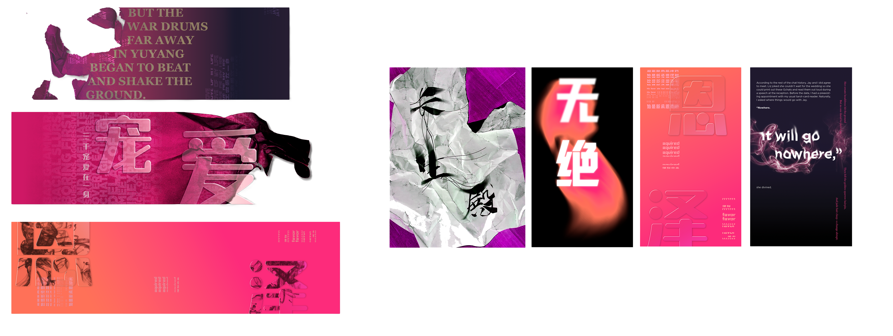
아이디어 구상
initial sketches